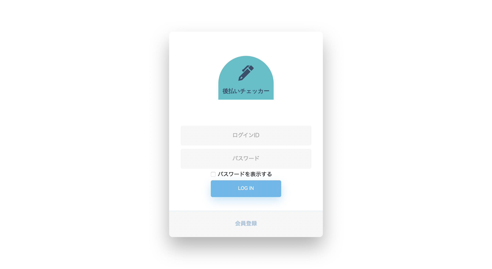

後払い決済情報を記録するためのアプリケーション「後払いチェッカー」

| サイトURL | https://booktown.sakura.ne.jp/credit-checker/ |
| 制作期間 | （制作）2021年4月、（修正）2022年4月19日〜4月21日 |
| 使用技術 | HTML, Bootstrap（Material Dashboard）, JavaScript（Sweetalert2）, jQuery, PHP, MySQL |
| Githubリポジトリリンク | https://github.com/tusk2019/credit-checker |
| 説明 | Bootstrapの管理画面用テンプレート「Material Dashboard」を使用して制作したアプリケーションです。 【担当ファイル】 ・index.html ディレクトリ「page」（アプリケーションのフロント部分のファイル） ・page_config.php（本村が書いたjQueryは495行目以下）...ユーザー設定ページ ・page_credit_list.php（本村が書いたjQueryは536行目以下）...後払いリストページ ・page_sign_up.html （本村が書いたjQueryは93行目以下）...会員登録ページ ・page_withdrawal.php...退会ページ ディレクトリ「cls」（アプリケーションのバックエンド部分のファイル） ・db_connect.php...DB接続用ファイル ・login.php...ログインのシステムファイル ・logout.php...ログアウトのシステムファイル ・set_credit.php...後払い情報記録ファイル ・set_user.php...ユーザー情報記録ファイル |